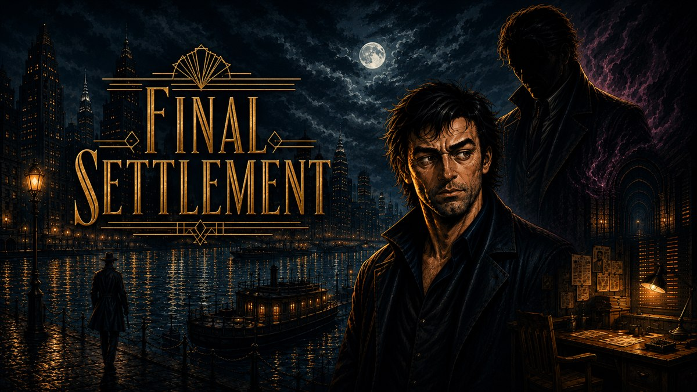
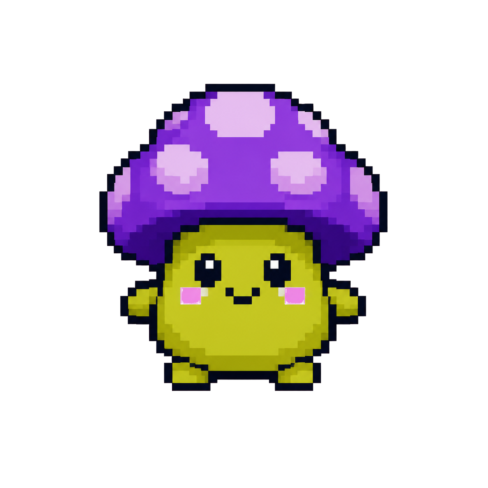
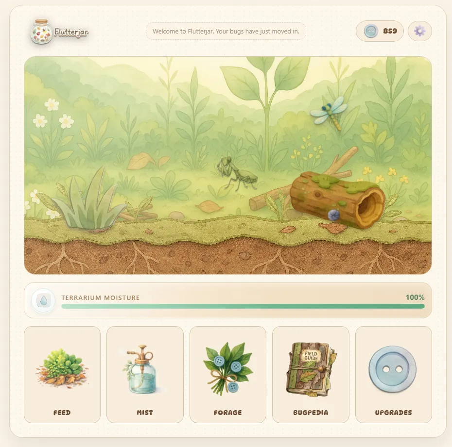
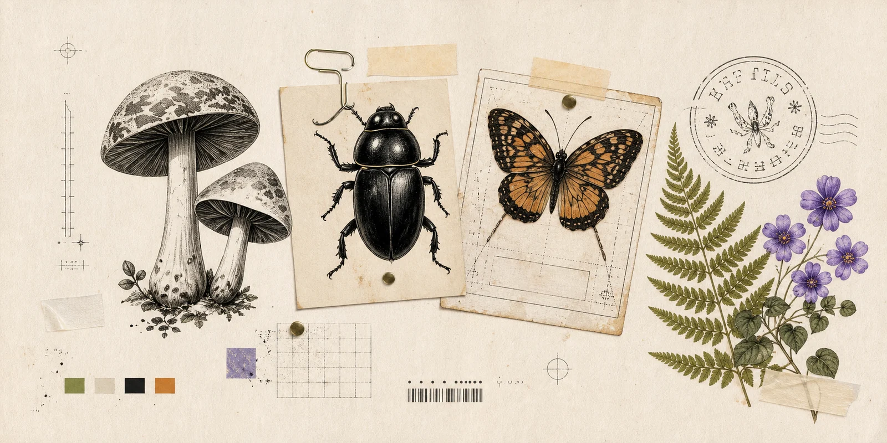

Indie developer + digital artist
Shaylee
Smith
I make browser games, useful little systems, and strange-nature goods.

In development
VEILBORN
An eldritch management game about growing a congregation, building a compound, and balancing faith against suspicion.
Enter the world
Selected worlds


Strange nature goods
Static
Symbiosis
Botanical art, field notes, creature curiosities, and useful little goods for people drawn to the wonderfully odd parts of the living world.
Visit the shop
Cozy does not have to mean plain.
I'm an independent game developer, digital artist, and product designer. Most of my work is part tool, part tiny world, and part excuse to make the details feel good.
Browser games
Tools + systems
Strange-nature art
Send a signal
Project notes, collaborations, shop questions, or weird little ideas are welcome.
contact@shayleesmith.com